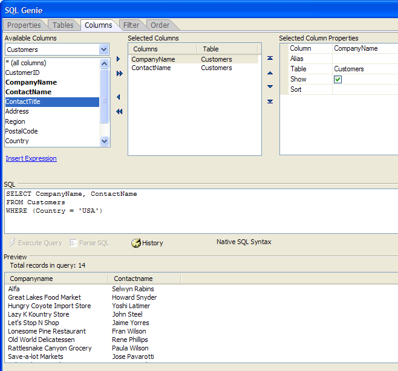

SQL_QUERY_BUILDER()
Syntax
SQL_Select_Statement as C = SQL_QUERY_BUILDER( Connection as SQL::Connection )
Argument | Description |
SQL_Select_Statement | A SQL SELECT statement that retrieves data from a back end database. |
Connection | A SQL::Connection object created with the SQL::Connection::Open()method. |
Description
The SQL_QUERY_BUILDER() displays the <span class=Screen>SQL Genie</span> , which assists you in defining a SQL SELECT statement.
Supported By
Alpha Five Version 8 Enterprise Edition
Example
The Xbasic statements shown below displayed the SQL Genie, which returned the statement assigned to the sql variable.

dim cn as sql::connection cn.open("{A5API=Access,FileName='C:\Databases\Northwind\northwind.mdb',UserName='Admin'}") sql = sql_query_builder(cn) ? sql = SELECT CompanyName, ContactName FROM Customers WHERE (Country = 'USA') |
See Also
SQL Helper Functions, SQL Genie